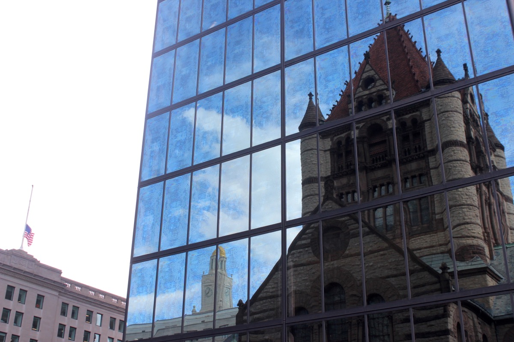
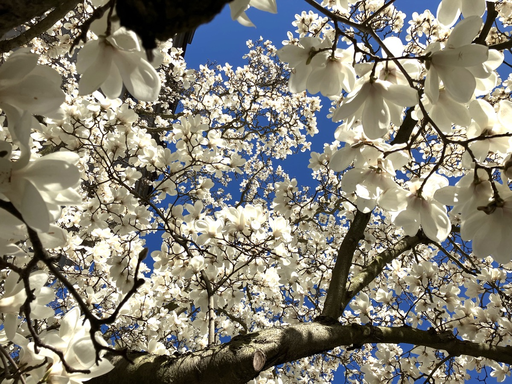
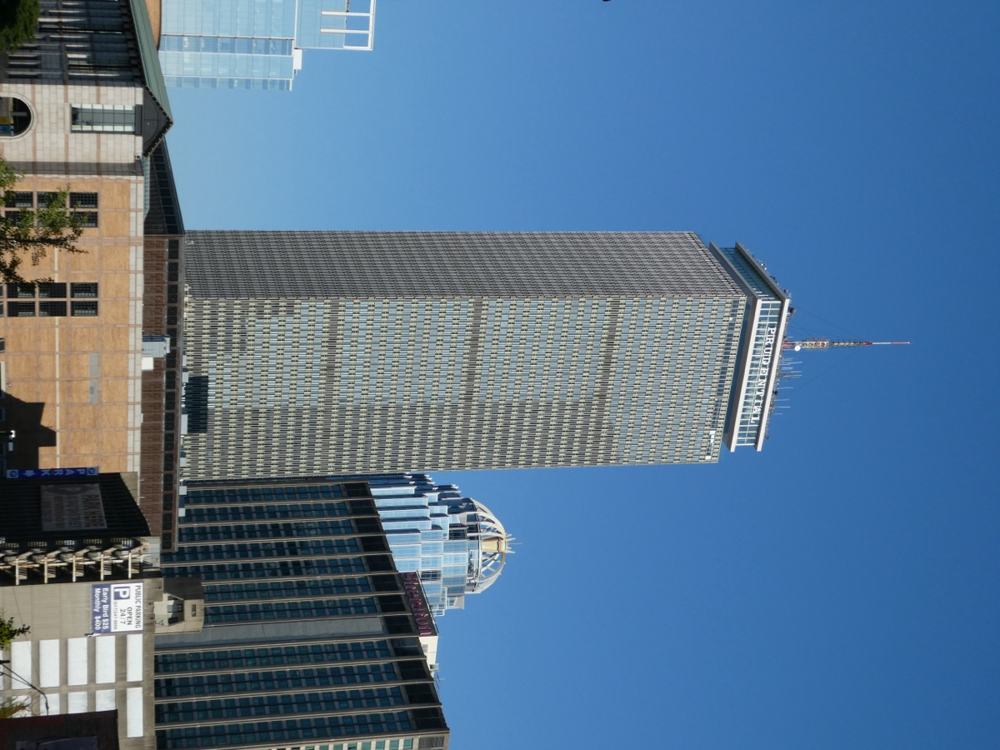
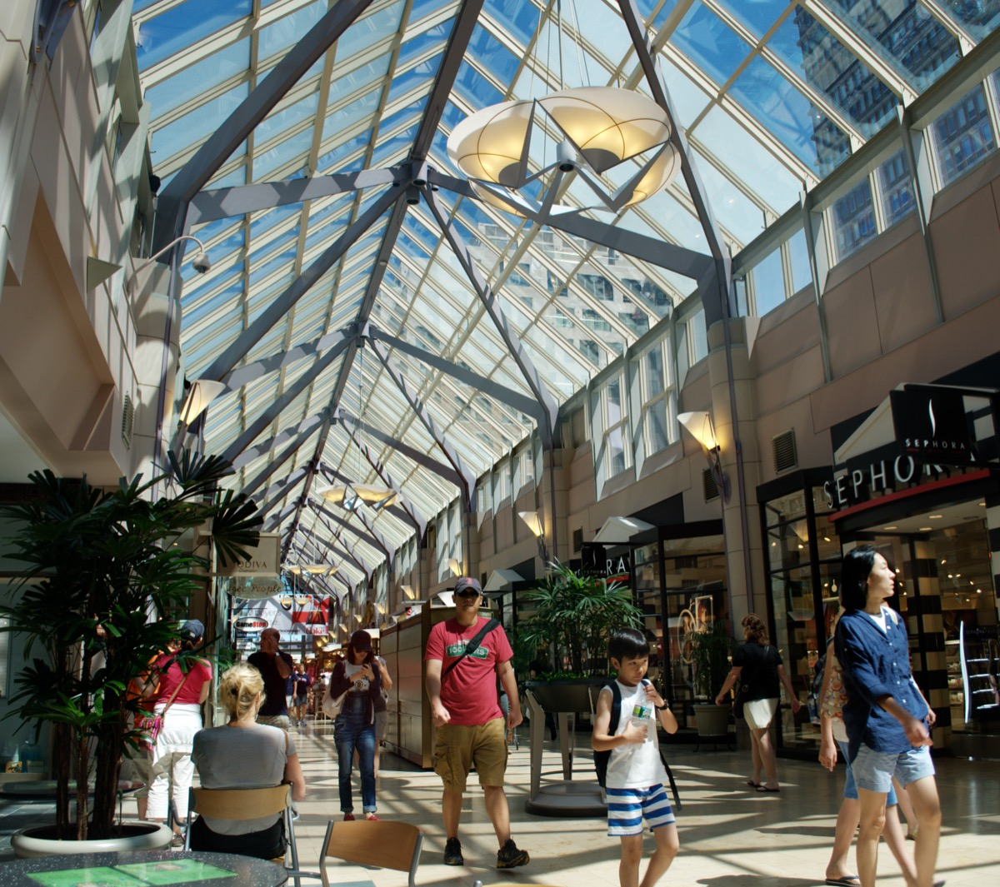

The best things to do in Back Bay Boston: the Public Library, Copley Square, Newbury Street, the Esplanade and View Boston, plus where to eat and the quiet streets between. Written for a first visit of half a day to a full day. Beacon Hill is ten minutes away.
The short answer
The 10 best things to do in Back Bay
- Bates Hall at the Public Library
- Copley Square and Trinity Church
- Walk Newbury Street end to end
- Commonwealth Avenue Mall in magnolia season
- View Boston at the Prudential
- The Esplanade and the Hatch Shell
- Stand on the Marathon finish line
- Step inside the Mapparium
- Seafood at Saltie Girl or Select
- Coffee and a book at Trident
01
Back Bay quick facts and how to get there
| Where | West of the Public Garden, between the Charles River and the Mass Pike |
| Size | About 0.6 square miles; 20 minutes end to end along Newbury |
| Nearest T stops | Arlington, Copley, Hynes (Green) · Prudential (Green E) · Back Bay (Orange, commuter rail, Amtrak) |
| From Downtown | 10-minute walk from Park Street across the Common and Public Garden |
| Main streets | Boylston (library, Prudential) · Newbury (shops) · Commonwealth (the mall) · Marlborough, Beacon (quiet) |
| The grid | Cross streets run alphabetically west, Arlington to Hereford |
| Best time | Weekday mornings for the library; late April for magnolias; summer evenings for the river |
| Parking | Difficult. Garages under the Prudential, Copley Place and the Common. Take the T |
Arriving by Amtrak? Get off at Back Bay station, not South Station. You are already here.
02
The best things to do in Back Bay
Most are free and within ten minutes of Copley Square.
The Boston Public Library

The one building in Boston you should walk into: marble stairs, Sargent murals and Bates Hall, the 218-foot reading room where anyone can sit. Free tours most days from the Dartmouth Street lobby.
Copley Square and Trinity Church

Boston's best square: the library facing H.H. Richardson's 1877 Trinity Church, the free Old South Church on the corner and the mirrored Hancock Tower behind. Pay for Trinity's La Farge murals and stained glass.
The Commonwealth Avenue Mall

A mile of elms and lawn down the middle of Commonwealth Avenue, with a statue on every block and the neighborhood's grandest houses facing it. In late April the magnolias bloom all at once.
View Boston at the Prudential Tower

The old Skywalk closed in 2020. View Boston replaced it in 2023 on floors 50 to 52, with a 360-degree glass deck and an open-air roof bar; it is the city's only high observation deck.
The Charles River Esplanade and the Hatch Shell

Three miles of riverside park with lagoons, docks, a bike path and the Hatch Shell, where the Pops play on the Fourth of July and free movies run all summer. Community Boating rents kayaks in season.
The Boston Marathon finish line
A blue and yellow stripe painted across Boylston year-round. The race finishes here on Patriots' Day, the third Monday in April; the two 2013 memorials are on the north sidewalk near 671 and 755 Boylston.
The Mapparium
A three-story stained-glass globe from 1935 that you cross on a glass bridge, seeing the world from the inside. Guided 20-minute visits only; the reflecting pool outside is free.
The Gibson House Museum
The way to see inside a brownstone: an 1860 row house kept exactly as its Victorian owners left it, wallpaper, gas fixtures and servants' quarters included. Tours take an hour.
03
Where to eat and drink in Back Bay
Skip the big seafood houses on Boylston. These are the local picks.
Saltie Girl and Select Oyster Bar: seafood
Saltie Girl is a tiny room with a wall of tinned fish and a fried lobster and waffles dish. Select Oyster Bar, off Newbury, is quieter and more Mediterranean, with a patio.
Grill 23: the steakhouse
Boston's steakhouse since 1983, in the 1920s Salada Tea building with bronze doors. The downstairs bar serves the same steak without a reservation.
Parish Café: the sandwich lunch
A bar whose menu is sandwiches designed by well-known Boston chefs, each named for its creator. The answer to lunch near the Public Garden.
Tatte, Trident and the cafés
Tatte is full by 10am on weekends. Trident has a bookstore and all-day breakfast, Flour is Joanne Chang's bakery, and Pavement is where Berklee students get coffee. More in the best cafés in Boston.
Contessa and the Oak Long Bar: drinks
Contessa is the glass-roofed Italian bar on top of the Newbury hotel, looking over the Public Garden; grab a bar seat. The Oak Long Bar at the Fairmont is a gilded 1912 hotel bar with a fireplace. More in the best rooftop bars in Boston.
Eataly and Bukowski Tavern: the fallbacks
Eataly in the Prudential Center is three floors of Italian counters, good for groups, rain or no reservation. Bukowski Tavern, under a garage on Dalton, is the neighborhood dive: a hundred beers and a burger.
04
Newbury Street and shopping in Back Bay
Eight blocks of brownstone shops: designer at the Public Garden end, student at the Mass Ave end.
| Blocks | Between | What you'll find |
|---|---|---|
| Arlington to Berkeley | Public Garden end | Chanel, Cartier, Burberry, galleries; the priciest block in the city |
| Berkeley to Dartmouth | Toward Copley | Designer boutiques, the Boston Architectural College, sidewalk cafés |
| Dartmouth to Fairfield | The middle | National brands, Muji, Brandy Melville, Stephanie's on Newbury patio |
| Fairfield to Hereford | Toward Mass Ave | Vintage, consignment, streetwear, Sonsie's front windows, tattoo shops |
| Hereford to Mass Ave | The last block | Trident Booksellers, Newbury Comics' original 1978 store, cheap eats, Berklee students |
How to walk Newbury Street
Start at the Public Garden and walk west; the street gets cheaper and more interesting as you go. Good shops are often in basements or up a flight of stairs.
Trident Booksellers and Café
Two floors of books, all-day breakfast, a full bar and evening events, here since 1984. Go upstairs for quieter window tables.
The Prudential Center and Copley Place

Two malls joined by a glass bridge, an indoor route from Boylston to Back Bay station in winter. Eataly and View Boston are in the Prudential, Neiman Marcus in Copley Place. More rainy-day ideas here.
Boylston Street
The commercial spine: library, finish line, flagship stores. Look for the glass Apple store at 815 and the 1905 white terra-cotta Berkeley Building at 420.
05
History: a neighborhood built on water
Until 1857 everything west of the Public Garden was a tidal marsh behind a failed mill dam. The state filled it with gravel hauled by train from Needham, one trainload every 45 minutes for over thirty years, and the houses followed the fill west. Arthur Gilman's plan gave Boston its only grid: alphabetical cross streets, a Paris-style boulevard and strict height rules. The brownstones are mostly brick, standing on wooden pilings that must stay underwater.
06
Side streets and quieter corners in Back Bay
Boylston and Newbury take the crowds. Residents live two streets north.
Marlborough Street
The quietest long street: all residential, gas-lit, not one shop between Arlington and Mass Ave. Best for doorways, railings and autumn color.
Beacon Street and the river side
On the line of the old mill dam, with the Gibson House and the footbridges to the Esplanade. The 1861 Arlington Street Church was the neighborhood's first building.
The public alleys
Every block has a numbered service alley behind it. They are public streets, and walking them shows you the backs of the houses: fire escapes, roof decks, gardens.
St. Botolph Street
South of the Pike, a narrow brick street of smaller 1880s row houses with a few good neighborhood restaurants. The nicest walk from Copley to Symphony Hall.
The First Baptist Church corner
H.H. Richardson's 1871 church, its tower frieze of trumpeting angels carved by Bartholdi of Statue of Liberty fame. Locals call it the Church of the Holy Bean Blowers.
The Fenway edge
Past Mass Ave the neighborhood becomes Fenway–Kenmore: Symphony Hall, Berklee, Kenmore Square and the ballpark. On game nights Boylston is a procession in red.
07
Back Bay events through the year
- Marathon, Patriots' Day (third Monday in April): crowds ten deep at the finish line; Copley streets closed.
- Late April: magnolias on Commonwealth Avenue. May: the Copley farmers market returns.
- June: the Boston Pride parade steps off from Copley Square.
- Summer: Pops fireworks at the Hatch Shell on the Fourth, free Wednesday movies, Open Newbury Sundays.
- October: the Boston Book Festival in Copley Square; Head of the Charles, third weekend.
- December: tree lightings at the Prudential and Copley; First Night on December 31.
Current list: things to do this weekend.
08
Tips for a first visit to Back Bay
- Start at the library: Dartmouth Street door, Bates Hall, out through the courtyard.
- Walk Newbury west and Commonwealth back east; the loop takes an hour.
- Use the alphabet: Arlington to Hereford tells you how far from the Garden you are.
- Book View Boston for the last hour of daylight.
- Cross to the river; the footbridges each take two minutes.
- Combine it: Beacon Hill and the South End are ten minutes away, Fenway Park fifteen. See our 3-day Boston itinerary.
FAQ
Back Bay Boston: common questions
What is Back Bay in Boston known for?
Victorian brownstones on filled marsh, the Boston Public Library, Copley Square and Trinity Church, Newbury Street, the Commonwealth Avenue Mall, the Esplanade and the Marathon finish line.
How do you get to Back Bay?
Green Line to Arlington, Copley or Hynes, or Prudential on the E branch. Back Bay station has the Orange Line, commuter rail and Amtrak. From Downtown, walk 10 minutes across the Public Garden.
Is the Prudential Skywalk still open?
No, it closed in 2020. View Boston replaced it in 2023 on floors 50 to 52 of the Prudential Tower, with a roof terrace and bar. Around $35; check hours first.
What is free to do in Back Bay?
The library and its tours, Copley Square, Old South Church, the Commonwealth Avenue Mall, the Esplanade, Newbury Street window-shopping, the finish line and the Christian Science reflecting pool.
Where should you eat in Back Bay?
Seafood at Saltie Girl or Select Oyster Bar, steak at Grill 23, sandwiches at Parish Café, coffee at Tatte or Trident. Eataly in the Prudential Center is the fallback.